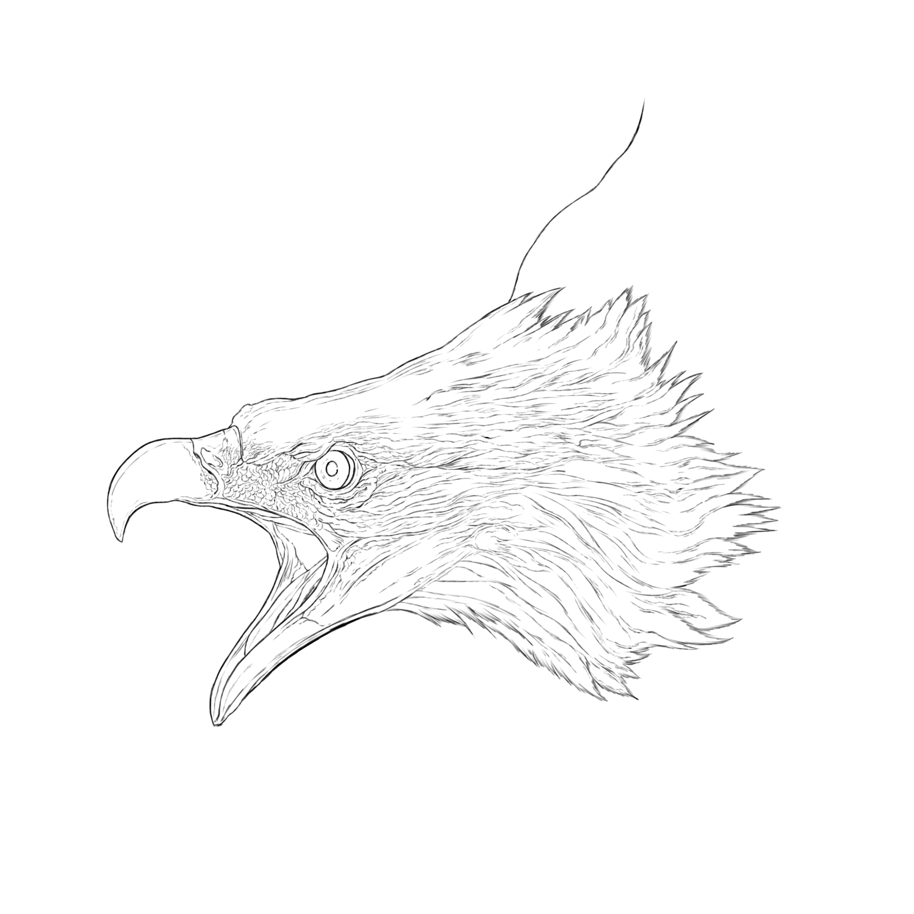

- 複雑な感情を表情で描く（輪郭） -
鷲をモチーフとした作品を製作中。鷲の絶妙な表情は輪郭の時点でかなりこだわり描いている。
この作品は耐え続けた末に人の心が爆ぜるようなものを描くことを念頭に置いている。
鷲が、本来持つ"獰猛さ"を心が爆ぜた様と見立てた。
また、鷲の表情は人間関係における相手に対する不満を解放するような凶暴な顔つきにしつつも、
そのどこかでは相手を本当は最後まで信じたという一連の流れを表現するため、過度に鷲の獰猛性を
表情に出すことは避けた。
怒りと悲しみの共存、あるいは怒りの先にある悲しみを表現した。
- Art & Design Works -
- Process -
・10月3日（金）

・10月xx日（x）
更新・続報をお待ち下さい。